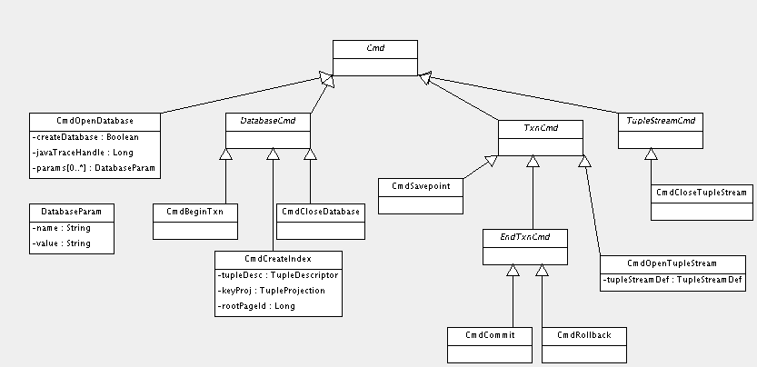
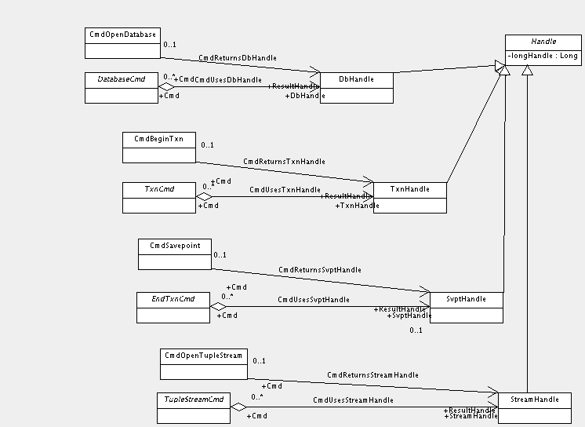
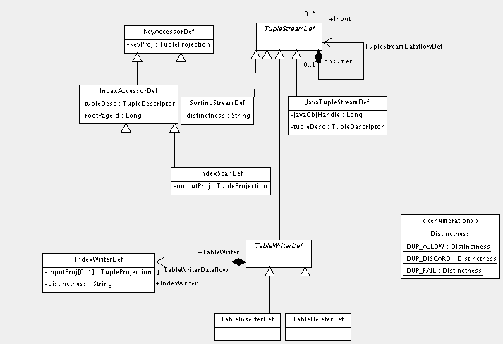

Overview
The architecture
doc mentions that Farrago Java code communicates with the Fennel
C++ kernel via JNI. This document presents the detailed design for
that integration.
Design Goals
The JNI interface wrapping Fennel is necessarily quite wide, as it has
to deal with a variety of storage objects and operations which will be
extended over time. This implies that the interface should be
designed carefully with a number of goals in mind.
- Programmer productivity: JNI programming is very tedious and
error-prone. Everything possible should be done to make life easy for
those who have to define and maintain this interface.
- Safety: JNI programming errors can result in undetected
corruption of the JVM and/or the storage manager, and weak typing
makes it very hard to detect these at compile time. The interface
design should attempt to counteract these problems.
- Expressiveness: It must be easy to exchange complex metadata
between Java and C++ code.
- Documentation: The interface must be well documented since it is
accessed by many Farrago components.
- Integration Completeness: The JNI interface must provide
integration support for all aspects of server execution (e.g. tracing,
exception handling, internationalization).
- Efficiency: Interface methods which are on the critical path for
query execution must be implemented with minimal overhead.
Approach
A well known approach which addresses most of the above design goals
is the proxy/peer system in
which C++ code is generated from Java interfaces. For Java code that
needs to call C++, the developer fills in implementations for
generated peer classes. Conversely, C++ code that needs to access
Java makes calls on generated proxy objects which wrap hidden JNI
method invocations. The code generation step addresses productivity,
safety, and expressiveness.
Generic tools such as Jace
are available which automate the Java-to-C++ code generation process.
For Farrago, a lightweight homebrew solution was developed along
similar lines, but tailored to take full advantage of available metadata.
The approach starts with a UML model for the data structures to be
communicated between Java and C++. This model is a subpackage of FEM
(TODO: link to FEM docs), so from it Java interfaces and
implementation classes are generated automatically as part of the
overall catalog build process (TODO: link to build docs). However,
these classes are marked with the
org.netbeans.mdr.transient
tag, so instances created at runtime will never be stored in the
catalog.
Once the MDR-based catalog is created, a custom C++ code generator is
run which produces C++ proxy classes (peers are not yet supported as
there has been little need so far). The code generator uses a
combination of Java reflection and JMI metadata access to transform
the source model. The available metadata allows us to take full
advantage of the type safety afforded by C++ generics. For example,
in Java, an JMI association is accessed via a weakly-typed Collection,
requiring typecasting. The code generator knows the true type of the
association end, so it generates an appropriate instantiation of a C++
template which hides all typecasting. The generated classes make use
of a small runtime framework for calling JNI.
TODO: diagram
It should be noted that the choice of this model-driven approach
brings some design goals into competition. The extra complexity of
dealing with a modeling tool introduces a learning curve and may add a
small drag on productivity (although it's still far superior to
straight JNI programming). However, the benefits for safety,
documentation, and expressiveness are worth the extra hassle.
FennelStorage Native Interface
The only Java class which declares any native methods is
net.sf.farrago.fennel.FennelStorage (TODO: javadoc link). Only a few
native methods are defined. The most important one is a generic
execution method for the command pattern described in the next
section. The other methods are special cases for efficient execution
of tuple streams.
Commands
Execution of Fennel storage manager operations is accomplished via the
Command pattern.
Java code instantiates a command object describing the operation to be
performed, and then passes this object to FennelDbHandle.executeCmd.
C++ code interprets the command via the corresponding generated
proxies and executes it. Here's a UML diagram of the command class hierarchy:

TODO: links to detailed docs for available commands
Handles
Fennel commands usually need to refer to existing storage objects such
as databases and transactions, and sometimes create new ones. These
inter-command references are accomplished via handles. A handle has
two parts:
- a dynamically allocated C++ object which stores the handle state,
including references to other underlying storage objects
- a Java object (instances of class
net.sf.farrago.fem.fennel.FennelHandle) which contains a long integer
representing the pointer to the C++ object
The command model defines associations which allow commands to refer
to input handles or return output handles:

Since specific associations are defined between individual command
and handle subclasses, safety is guaranteed (i.e. a
command can't accidentally pass a transaction handle where a stream
handle is expected).
Commands may refer to more than one handle (e.g. CmdRollback always
refers to a transaction handle, but may also refer to a savepoint handle).
Complex Return Types
In most cases encountered so far, complex structures are passed from
Java to C++ but not in the other direction. The current code
generation infrastructure supports proxies with limited mutator
support. Mutators are only generated for attributes with simple types
(primitives and Strings) whose names begin result. The few
instances where the storage manager must return complex information
are special-cased, e.g. by constructing an XMI string which is
transformed into Java object representation via the MDR import
facility.
Tuple Stream Definition
One of the commands, CmdOpenTupleStream, deserves individual mention.
Its single innocent-looking attribute, tupleStreamDef, is really an
entire submodel. Execution of CmdOpenTupleStream results in the
construction of an entire query execution graph of specialized
TupleStream nodes. The only graph topology currently supported is a
tree, which is why the Input/Consumer association in the model below
is 1-to-n rather than m-to-n:

The leaf nodes derived from TupleStreamDef in the above inheritance
hierarchy represent instantiable Fennel TupleStream types. When
Fennel interprets CmdOpenTupleStream, it walks the recursive
TupleStreamDataflowDef association, constructing the appropriate type
of TupleStream for each node visited, initializing it with the
defined parameters. It also ties the streams together into a dataflow
graph mirroring the TupleStreamDef associations and returns a handle
to this graph as the result of the command.
Tuple Stream Execution
When a TupleStream graph is executed, it may process a very large
number of tuples, and in some cases, these tuples must flow through
the Java virtual machine for filtering, transformation, etc.
FennelStorage defines a separate native interface for this purpose;
the interface is designed for efficiency to the extent allowed by
Java. There are two cases to consider: Java processing of tuples
produced by Fennel, and Fennel processing of tuples produced by Java.
From Fennel to Java
For this case, FennelStorage provides the tupleStreamFetch method,
which takes a stream handle and a byte array as input. The Fennel
implementation fills the byte array with data in the same tuple format
used by Fennel internally. Tuples are stored contiguously, and only
complete tuples are returned. A separate method tupleStreamDescribe
can be called to retrieve a physical description of the stream output
format. This, together with java.nio.ByteBuffer, is used by
implementations of net.sf.farrago.query.FennelTupleReader to unmarshal
the data returned by Fennel.
From Java to Fennel
In the opposite direction, things are a little more complicated.
First of all, the stream definition must tell Fennel how to call back
into Java in order to retrieve tuples. This is accomplished by
specifying an instance of JavaTupleStreamDef in the stream definition
passed to CmdOpenTupleStream. [TBD: Java object handles or class names
or whatever ends up being used.] Fennel uses the attributes in
JavaTupleStreamDef to locate an instance of Java class
JavaTupleStream. During query execution, when a consumer of this
stream requests tuples, Fennel makes a call to
JavaTupleStream.fillBuffer, passing a ByteBuffer. (Note that this
call sequence bypasses the usual proxy code generation infrastructure
for control and efficiency.) This ByteBuffer is actually a direct
reference to C++ memory compliments of java.nio, eliminating the need
to copy (TBD: why we don't do the same thing in the tupleStreamFetch
case). The JavaTupleStream implementation writes into this ByteBuffer
via an instance of net.sf.farrago.query.FennelTupleWriter which has
been provided with the target tuple format. Once the buffer is filled
or no more tuples are available, JavaTupleStream.fillBuffer returns to
Fennel, which continues execution with the consumer stream.
TODO: diagram of a tree involving dataflow in both directions
Configuration Parameters
TBD
Tracing
TBD
Exception Handling
TBD
Internationalization
TBD